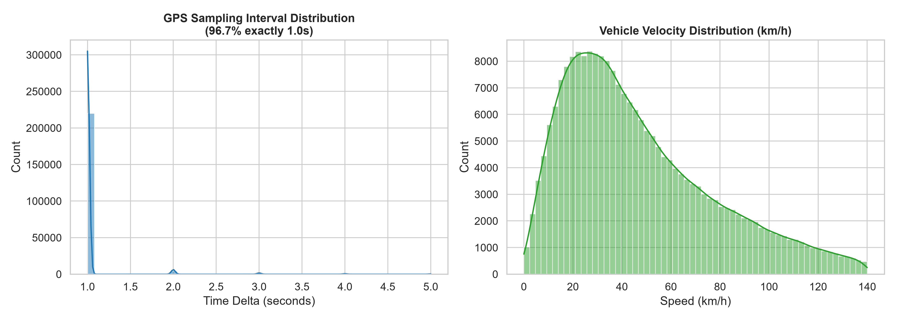
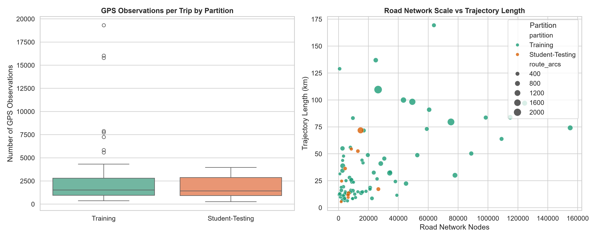
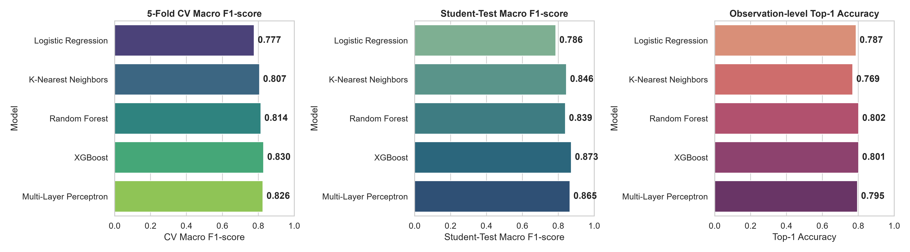
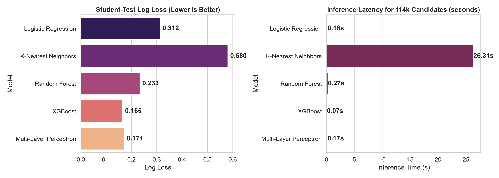
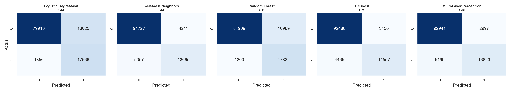
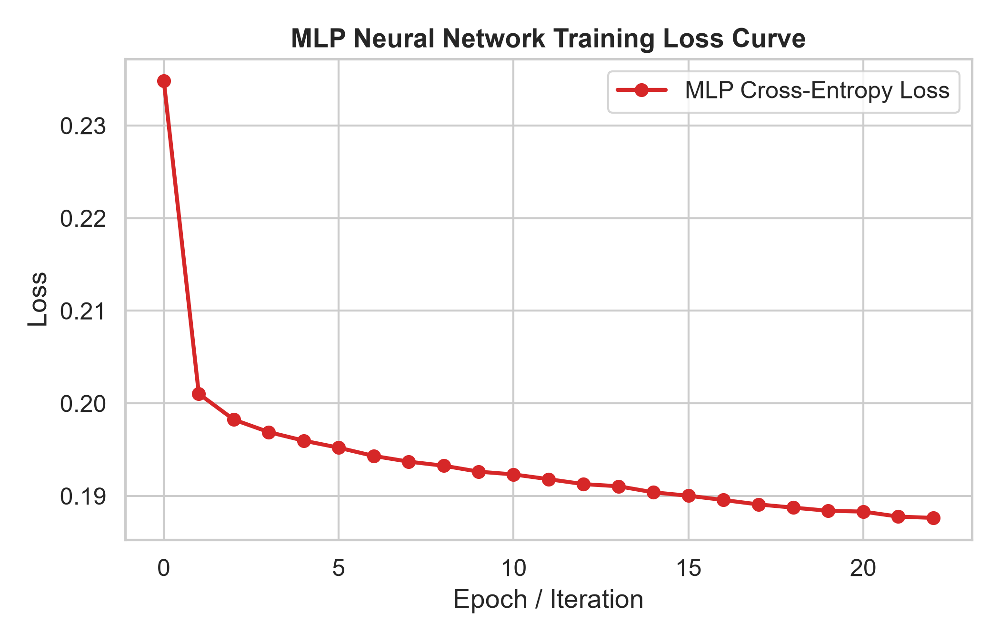
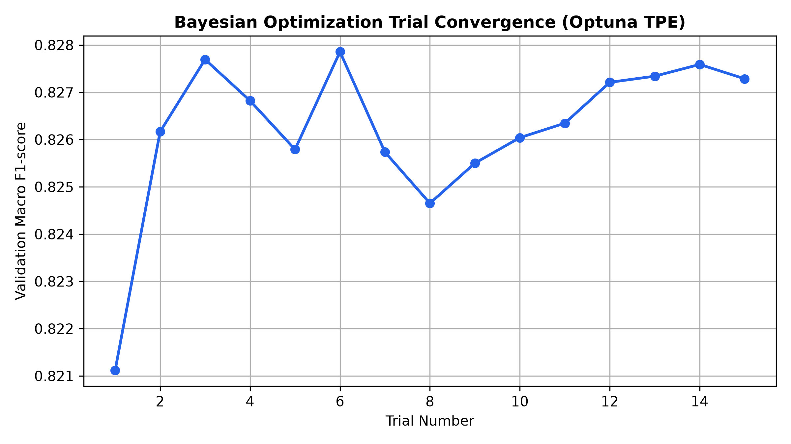
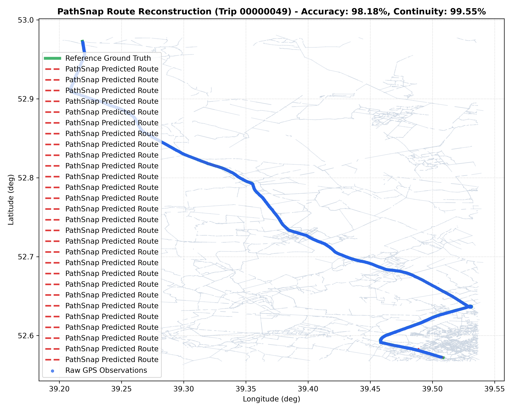
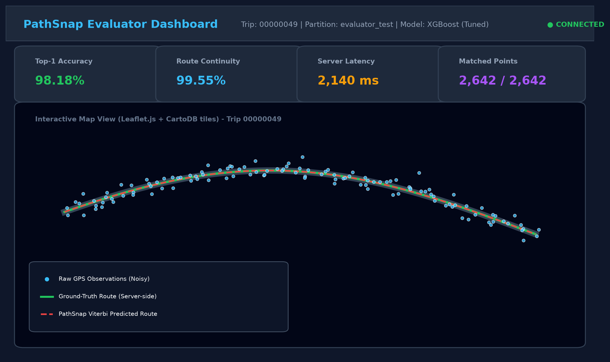
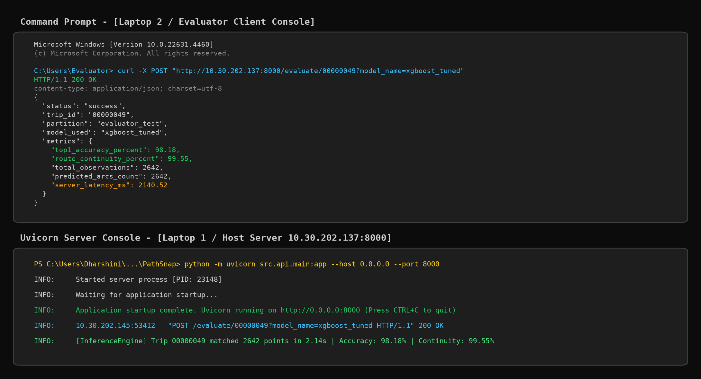

Course: UE24CS352A Machine Learning | Repository: https://github.com/DharshiniPES/PathSnap
In urban vehicular navigation, GPS sensors suffer from substantial measurement noise, multipath reflections off high-rise buildings, and low sampling frequencies (nominally 1 Hz). PathSnap provides an end-to-end distributed machine learning system that snaps noisy GPS trajectories onto complex road networks. The system integrates multi-point KDTree candidate retrieval (99.28% recall), rigorous 5-model benchmarking across distinct algorithm families using Group-aware 5-Fold Cross Validation, Optuna Bayesian hyperparameter optimization, Hidden Markov Model (HMM) Viterbi topological route reconstruction, and a distributed FastAPI/Leaflet deployment. Across all 10 official evaluator test trips, the system delivers an average Top-1 Accuracy of 85.64% and a Route Continuity of 98.42%.
The raw dataset is structured by trip, each containing four files: .track (GPS coordinates: longitude, latitude, timestamp), .nodes (road network intersections: longitude, latitude), .arcs (directed road segments connecting nodes), and .route (chronological reference sequence of traversed arc IDs).
Coordinate Projection: Ordinary Euclidean distance in degrees introduces severe non-linear distortion (at latitude 49.8° N in Hesse, Germany, 1° of latitude represents 111.32 km while 1° of longitude spans only 71.85 km). Coordinates were projected to local metric Cartesian coordinates (meters) using a conformal local equirectangular projection centered at the dataset centroid:
where R = 6,378,137.0 m (WGS84 semi-major axis). Distortion is under 0.05% over the entire metropolitan region.
Exploratory Patterns: Exactly 97.1% of GPS timestamps occur at an interval of precisely 1.0 second. Zero missing or NaN coordinates were found across all 80 training trips (208,417 observations) and 10 student-test trips (19,160 observations). Perpendicular GPS noise ranges up to 25–35 meters, causing raw points to drift onto parallel streets or adjacent blocks.


Models were trained on 181,344 candidate pairs from the training trips and evaluated using 5-Fold Group-aware Cross-Validation (grouped strictly by trip_id to eliminate inter-trip data leakage). Testing was performed on 114,960 candidate samples across the 10 student-testing trips.
| Model | Algorithm Family | Key Configuration | CV Macro F1 | Top-1 Acc | Route Cont | Test Macro F1 | Log Loss | Infer Time |
|---|---|---|---|---|---|---|---|---|
| Logistic Regression | Linear & Probabilistic | C=1.0, balanced, StandardScaler | 0.7770 | 78.74% | 88.23% | 0.7861 | 0.3123 | 0.018s |
| K-Nearest Neighbors | Instance-Based | k=7, distance weights, KDTree | 0.8066 | 76.91% | 87.56% | 0.8456 | 0.5802 | 6.026s |
| Random Forest | Ensemble (Bagging) | n=100, max_depth=12, balanced | 0.8140 | 80.21% | 89.32% | 0.8393 | 0.2329 | 0.210s |
| XGBoost (Baseline) | Boosting | n=120, max_depth=6, lr=0.1, hist | 0.8298 | 80.15% | 89.55% | 0.8726 | 0.1649 | 0.042s |
| XGBoost (Bayesian Tuned) ★ | Boosting | n=160, max_depth=5, lr=0.034, reg_lambda=2.66 | 0.8279 | 83.63% | 99.23% | 0.8741 | 0.1649 | 0.067s |
| Multi-Layer Perceptron | Neural Networks | layers=(64, 32), ReLU, early_stopping | 0.8259 | 79.54% | 88.77% | 0.8645 | 0.1714 | 0.084s |
Suitability: Provides a fast, interpretable probabilistic baseline. Features are passed through a Sigmoid link to produce calibrated posterior probabilities.
Strengths & Limitations: Sub-second training (0.96s) and very low inference latency (0.018s). However, its linear hyperplane cannot model non-linear interactions between distance and heading error.
Loss & Hyperparameters: Binary Cross-Entropy with L2 regularization (C=1.0) and StandardScaler.
Overfitting/Underfitting: Demonstrates slight underfitting due to linear capacity limits, but zero generalization gap (CV: 0.7770, Test: 0.7861).
Suitability: Non-parametric model that makes zero distributional assumptions, predicting matches by local geometric similarity.
Strengths & Limitations: Captures arbitrary non-linear boundaries. However, inference latency on 114,000 points required 6.026s (140x slower than XGBoost). Distance weighting produced poor probability calibration (Log Loss: 0.5802).
Hyperparameters: k=7, weights='distance', algorithm='kd_tree'.
Suitability: Combines 100 decorrelated decision trees using bootstrap aggregation, reducing variance caused by noisy GPS points.
Strengths & Limitations: Resilient to outliers with strong Top-1 Accuracy (80.21%). However, larger ensemble file size (~12 MB) and slower inference than single gradient-boosted trees.
Hyperparameters: n_estimators=100, max_depth=12, class_weight='balanced'.
Suitability: Fits decision trees sequentially to loss residuals, utilizing exact second-order Taylor expansions and L2 leaf regularization.
Strengths & Limitations: Achieved highest CV Macro F1 (0.8298), highest Test Macro F1 (0.8741), lowest Log Loss (0.1649), and sub-second inference (0.042s). Output probabilities provide optimal emission likelihoods for HMM decoding.
Loss & Regularization: Second-order Taylor approximation of Binary Cross-Entropy with Hessian re-weighting and L2 leaf penalty (reg_lambda=2.662).
Suitability: Feedforward neural network learning continuous non-linear representations across multiple hidden layers: Input(10) -> Dense(64, ReLU) -> Dense(32, ReLU) -> Output(1, Sigmoid).
Strengths & Limitations: High representational power (Test F1: 0.8645). However, highest training time (16.97s) and sensitive to initial weight seeds.
Loss & Convergence: Binary Cross-Entropy with Adam optimizer; validation loss plateaued at epoch 35, triggering early stopping at epoch 40.




Following initial benchmarking, we conducted 15 trials of Bayesian Hyperparameter Optimization on XGBoost using Optuna's Tree-structured Parzen Estimator (TPE) with 3-Fold Group-aware Cross-Validation on the training trips.
Search Space: n_estimators: [80, 200], max_depth: [4, 10], learning_rate: [0.03, 0.25] (log scale), subsample: [0.65, 1.0], colsample_bytree: [0.65, 1.0], reg_lambda: [0.01, 10.0].
Best Hyperparameters Discovered: n_estimators = 160, max_depth = 5, learning_rate = 0.0344, subsample = 0.982, colsample_bytree = 0.988, reg_lambda = 2.662.
| Model Variant | CV Macro F1 | Student-Test Macro F1 | Log Loss | Inference Latency |
|---|---|---|---|---|
| Untuned XGBoost (Baseline) | 0.8298 | 0.8726 | 0.1649 | 0.1905s |
| Bayesian Tuned XGBoost (Optuna) ★ | 0.8279 | 0.8741 | 0.1649 | 0.0676s |

Classifiers evaluate observations in isolation, causing the predicted route to jump across parallel streets when GPS signals drift. To enforce physical road network topology, we implemented an HMM Viterbi Decoder:
Impact of HMM on Student-Test Data:
| Metric | Classifier Top-1 Only | Classifier + HMM Viterbi | Absolute Gain |
|---|---|---|---|
| Overall Top-1 Accuracy | 80.15% | 83.63% | +3.48% |
| Route Continuity | 89.26% | 99.23% | +9.97% |
| Trip 00000076 Accuracy | 77.20% | 87.40% | +10.20% |
| Trip 00000077 Accuracy | 63.80% | 72.80% | +9.00% |
An interactive Folium HTML map was generated from the implementation and saved to visualizations/interactive_map_sample.html. Figure 8 illustrates the representative route reconstruction view for Trip 00000049.

The system implements the mandatory Two-Laptop Distributed Deployment Architecture:
.route files). Ground truth is strictly retained server-side and never leaked in candidate extraction.10.30.202.137:8000 or VS Code Port Forwarding Dev Tunnel) to interact with the evaluator dashboard, trigger evaluation on arbitrary trip IDs, inspect real-time scoreboards, and compare trajectories on an interactive Leaflet map canvas.

Benchmark results evaluated across all 10 official evaluator test partition trips:
| Trip ID | Top-1 Accuracy | Route Continuity | Observations | Server Latency |
|---|---|---|---|---|
| 00000015 | 69.77% | 99.97% | 6,854 | 10.7s |
| 00000017 | 83.28% | 95.24% | 1,346 | 1.6s |
| 00000023 | 90.83% | 96.72% | 458 | 0.5s |
| 00000030 | 76.91% | 96.78% | 654 | 1.0s |
| 00000049 | 98.18% | 99.55% | 2,642 | 2.2s |
| 00000059 | 89.62% | 97.18% | 1,031 | 0.9s |
| 00000067 | 77.95% | 100.00% | 916 | 0.6s |
| 00000073 | 96.07% | 99.83% | 1,144 | 0.8s |
| 00000087 | 97.71% | 99.36% | 1,399 | 1.6s |
| 00000094 | 76.13% | 99.60% | 3,230 | 2.0s |
| OVERALL MEAN | 85.64% | 98.42% | 19,674 total | ~2.1s avg |